本章要开发的是作业中心微服务，对应的maven工程为pd-work。作业中心微服务提供TMS中各种作业、单据、任务的维护功能，例如：快递员的取件任务、快递员的派件任务、司机的运输作业等。
作业中心服务对应操作的数据库为pd_work数据库，本小节就来了解一下pd_work数据库中的数据表结构。
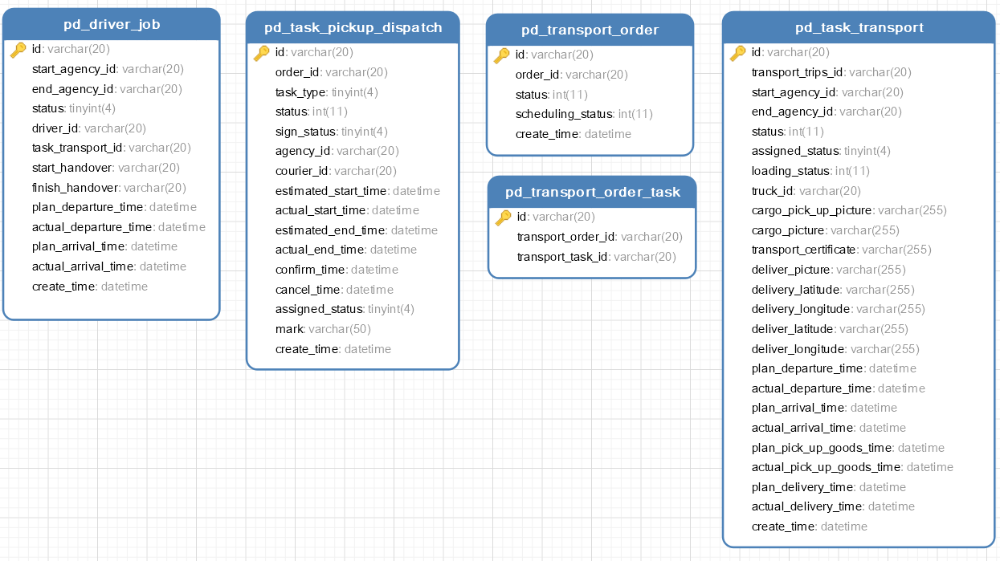
逻辑关系： 1、用户通过手机App寄件，产生订单(pd_order),根据订单计算，产生快递员取件任务(pd_task_pickup_dispatch) 2、快递员上门揽件，揽件后产生运单(pd_transport_order) 3、根据订单和运单计算，产生运输任务(pd_task_transport) 4、一个运单可能关联多个运输任务，通过运单与运输任务关联表(pd_transport_order_task)记录关联关系 5、根据运输任务计算，产生司机作业单(pd_driver_job) 6、货物到达收件人网点后，计算产生快递员派件任务(pd_task_pickup_dispatch)
pd_task_pickup_dispatch为快递员取件、派件任务信息表，结构如下：
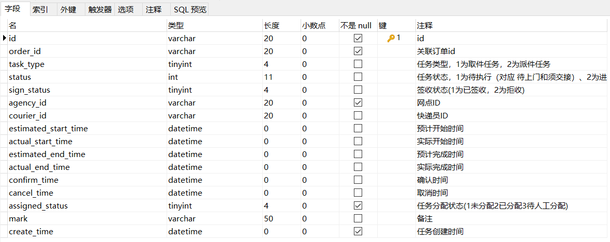
pd_transport_order为运单表，结构如下：
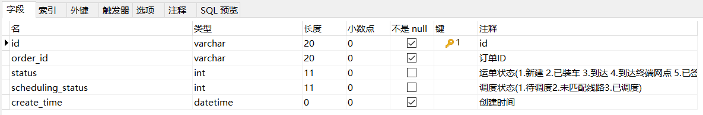
pd_task_transport为运输任务表，结构如下：
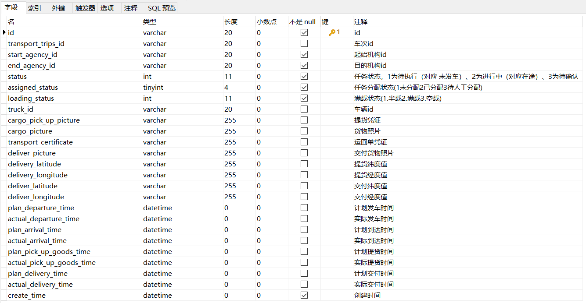
pd_transport_order_task为运单与运输任务关联表，结构如下：
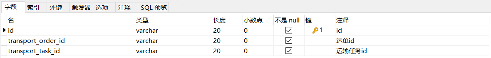
pd_driver_job为司机作业单表，结构如下：
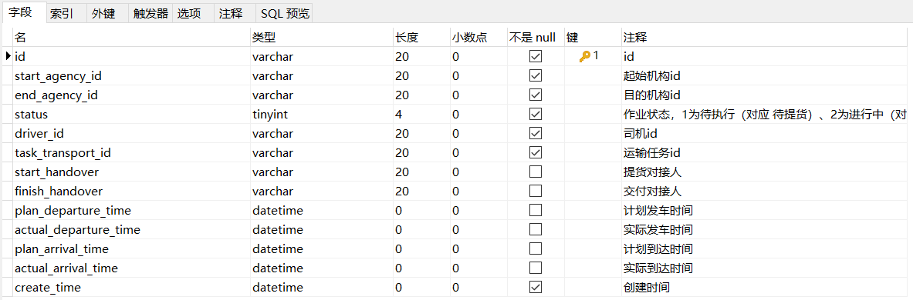
bootstrap.yml：
xserver tomcat uri-encodingUTF-8 max-threads1000 min-spare-threads30 port8187 connection-timeout50000msspring application namepd-work # 环境 dev|test|prod profiles activedev main allow-bean-definition-overridingtruebootstrap-dev.yml：
xxxxxxxxxxspring cloud nacos usernametms passworditheima123 discovery server-addr68.79.63.428848 grouppinda-tms namespace6107f553-3214-48d8-89c3-945f8446e3d9 config server-addr68.79.63.428848 file-extensionyml grouppinda-tms namespace6107f553-3214-48d8-89c3-945f8446e3d9 # jackson时间格式化 jackson time-zone$spring.jackson.time-zone date-format$spring.jackson.date-format servlet multipart max-file-size$spring.servlet.multipart.max-file-size max-request-size$spring.servlet.multipart.max-request-size enabled$spring.servlet.multipart.enabled datasource druid type$spring.datasource.druid.type driver-class-name$spring.datasource.druid.driver-class-name url$spring.datasource.druid.url username$spring.datasource.druid.username password$spring.datasource.druid.password initial-size$spring.datasource.druid.initial-size max-active$spring.datasource.druid.max-active min-idle$spring.datasource.druid.min-idle max-wait$spring.datasource.druid.max-wait pool-prepared-statements$spring.datasource.druid.pool-prepared-statements max-pool-prepared-statement-per-connection-size$spring.datasource.druid.max-pool-prepared-statement-per-connection-size time-between-eviction-runs-millis$spring.datasource.druid.time-between-eviction-runs-millis min-evictable-idle-time-millis$spring.datasource.druid.min-evictable-idle-time-millis test-while-idle$spring.datasource.druid.test-while-idle test-on-borrow$spring.datasource.druid.test-on-borrow test-on-return$spring.datasource.druid.test-on-return stat-view-servlet enabled$spring.datasource.druid.stat-view-servlet.stat-view-servlet url-pattern$spring.datasource.druid.stat-view-servlet.url-pattern filter stat log-slow-sql$spring.datasource.druid.filter.stat.log-slow-sql slow-sql-millis$spring.datasource.druid.filter.stat.slow-sql-millis merge-sql$spring.datasource.druid.filter.stat.merge-sql wall config multi-statement-allow$spring.datasource.druid.filter.wall.config.multi-statement-allow#mybatismybatis-plus mapper-locations$mybatis-plus.mapper-locations #实体扫描，多个package用逗号或者分号分隔 typeAliasesPackage$mybatis-plus.typeAliasesPackage global-config #数据库相关配置 db-config #主键类型 AUTO:"数据库ID自增", INPUT:"用户输入ID", ID_WORKER:"全局唯一ID (数字类型唯一ID)", UUID:"全局唯一ID UUID"; id-type$mybatis-plus.global-config.db-config.id-type #字段策略 IGNORED:"忽略判断",NOT_NULL:"非 NULL 判断"),NOT_EMPTY:"非空判断" field-strategy$mybatis-plus.global-config.db-config.field-strategy #驼峰下划线转换 column-underline$mybatis-plus.global-config.db-config.column-underline logic-delete-value$mybatis-plus.global-config.db-config.logic-delete-value logic-not-delete-value$mybatis-plus.global-config.db-config.logic-not-delete-value banner$mybatis-plus.global-config.banner #原生配置 configuration map-underscore-to-camel-case$mybatis-plus.configuration.map-underscore-to-camel-case cache-enabled$mybatis-plus.configuration.cache-enabled call-setters-on-nulls$mybatis-plus.configuration.call-setters-on-nulls jdbc-type-for-null$mybatis-plus.configuration.jdbc-type-for-null log-implorg.apache.ibatis.logging.stdout.StdOutImplxxxxxxxxxxpackage com.itheima.pinda;import org.springframework.boot.SpringApplication;import org.springframework.boot.autoconfigure.SpringBootApplication;import org.springframework.cloud.client.discovery.EnableDiscoveryClient;public class WorkApplication { public static void main(String[] args) { SpringApplication.run(WorkApplication.class, args); }}xxxxxxxxxxpackage com.itheima.pinda.config;import com.baomidou.mybatisplus.extension.plugins.PaginationInterceptor;import org.springframework.context.annotation.Bean;import org.springframework.context.annotation.Configuration;public class MybatisPlusConfig { public PaginationInterceptor paginationInterceptor() { return new PaginationInterceptor(); }}xxxxxxxxxxpackage com.itheima.pinda.config;import org.springframework.context.annotation.Bean;import org.springframework.context.annotation.Configuration;import org.springframework.web.servlet.config.annotation.ResourceHandlerRegistry;import org.springframework.web.servlet.config.annotation.WebMvcConfigurationSupport;import springfox.documentation.builders.ApiInfoBuilder;import springfox.documentation.builders.PathSelectors;import springfox.documentation.builders.RequestHandlerSelectors;import springfox.documentation.service.ApiInfo;import springfox.documentation.spi.DocumentationType;import springfox.documentation.spring.web.plugins.Docket;import springfox.documentation.swagger2.annotations.EnableSwagger2;public class SwaggerConfig extends WebMvcConfigurationSupport { // 定义分隔符 private static final String splitor = ";"; public Docket createRestApi() { // 文档类型 return new Docket(DocumentationType.SWAGGER_2) // 创建api的基本信息 .apiInfo(apiInfo()) // 选择哪些接口去暴露 .select() // 扫描的包 .apis(RequestHandlerSelectors.basePackage("com.itheima.pinda.controller")) .paths(PathSelectors.any()) .build(); } private ApiInfo apiInfo() { return new ApiInfoBuilder() .title("品达物流订单模块--Swagger文档") .version("1.0") .build(); } /** * 防止@EnableMvc把默认的静态资源路径覆盖了，手动设置的方式 * * @param registry */ protected void addResourceHandlers(ResourceHandlerRegistry registry) { // 解决静态资源无法访问 registry.addResourceHandler("/**").addResourceLocations("classpath:/static/"); // 解决swagger无法访问 registry.addResourceHandler("/swagger-ui.html").addResourceLocations("classpath:/META-INF/resources/"); // 解决swagger的js文件无法访问 registry.addResourceHandler("/webjars/**").addResourceLocations("classpath:/META-INF/resources/webjars/"); }}xxxxxxxxxxpackage com.itheima.pinda.common;import com.baomidou.mybatisplus.core.incrementer.IdentifierGenerator;import com.itheima.pinda.common.utils.IdWorker;import org.springframework.beans.factory.annotation.Autowired;import org.springframework.context.annotation.Bean;import org.springframework.stereotype.Component;/** * 自定义ID生成器 */public class CustomIdGenerator implements IdentifierGenerator { public IdWorker idWorkker(){ return new IdWorker(1, 1); } private IdWorker idWorker; public Long nextId(Object entity) { return idWorker.nextId(); }}用户通过手机App寄件，产生订单(pd_order),根据订单计算，产生快递员取件任务(pd_task_pickup_dispatch)。 货物到达收件人网点后，计算产生快递员派件任务(pd_task_pickup_dispatch)。
任务类型：1为取件任务，2为派件任务
任务状态：1为待执行（对应 待上门和须交接）、2为进行中（该状态暂不使用，属于保留状态）、3为待确认（对应 待妥投和须交件）、4为已完成、5为已取消
签收状态：1为已签收，2为拒收
任务分配状态：1为未分配，2为已分配，3为待人工分配
产品原型如下：
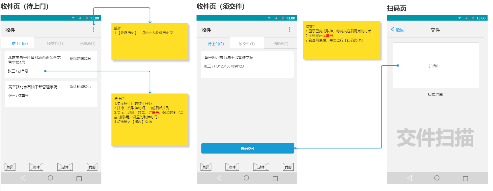
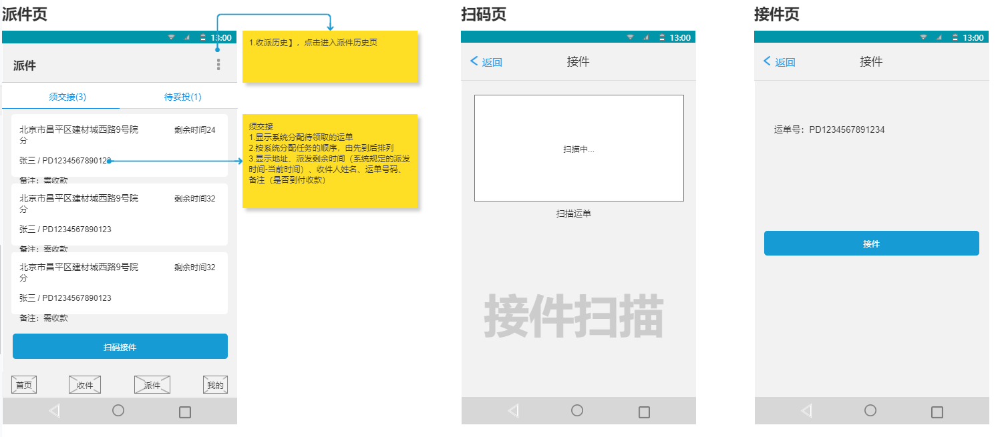
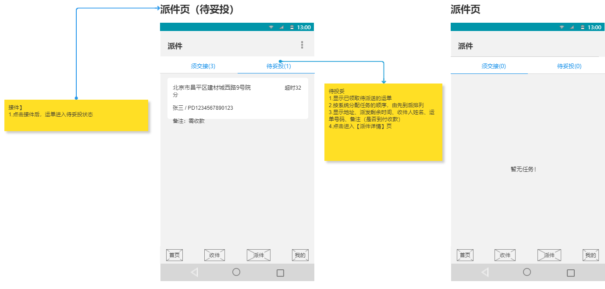
快递员取件、派件任务对应的数据模型为：pd_work数据库中的pd_task_pickup_dispatch表，表结构如下：
xxxxxxxxxxpackage com.itheima.pinda.entity;import com.baomidou.mybatisplus.annotation.IdType;import com.baomidou.mybatisplus.annotation.TableId;import com.baomidou.mybatisplus.annotation.TableName;import java.io.Serializable;import java.time.LocalDateTime;import lombok.Data;import lombok.EqualsAndHashCode;import lombok.experimental.Accessors;/** * 快递员取件、派件任务 */(callSuper = false)(chain = true)("pd_task_pickup_dispatch")public class TaskPickupDispatch implements Serializable { private static final long serialVersionUID = 1L; /** * id */ (value = "id", type = IdType.INPUT) private String id; /** * 关联订单id */ private String orderId; /** * 任务类型，1为取件任务，2为派件任务 */ private Integer taskType; /** * 任务状态，1为待执行（对应 待上门和须交接）、2为进行中（该状态暂不使用，属于保留状态）、3为待确认（对应 待妥投和须交件）、4为已完成、5为已取消 */ private Integer status; /** * 签收状态(1为已签收，2为拒收) */ private Integer signStatus; /** * 网点ID */ private String agencyId; /** * 快递员ID */ private String courierId; /** * 预计开始时间 */ private LocalDateTime estimatedStartTime; /** * 实际开始时间 */ private LocalDateTime actualStartTime; /** * 预计完成时间 */ private LocalDateTime estimatedEndTime; /** * 实际完成时间 */ private LocalDateTime actualEndTime; /** * 确认时间 */ private LocalDateTime confirmTime; /** * 取消时间 */ private LocalDateTime cancelTime; /** * 任务分配状态(1未分配2已分配3待人工分配) */ private Integer assignedStatus; /** * 备注 */ private String mark; /** * 任务创建时间 */ private LocalDateTime createTime;}第一步：创建PickupDispatchTaskController并提供save方法
xxxxxxxxxxpackage com.itheima.pinda.controller;import com.itheima.pinda.DTO.TaskPickupDispatchDTO;import com.itheima.pinda.common.utils.PageResponse;import com.itheima.pinda.entity.TaskPickupDispatch;import com.itheima.pinda.enums.pickuptask.PickupDispatchTaskAssignedStatus;import com.itheima.pinda.service.ITaskPickupDispatchService;import org.apache.commons.lang.StringUtils;import org.springframework.beans.BeanUtils;import org.springframework.beans.factory.annotation.Autowired;import org.springframework.web.bind.annotation.*;import java.util.ArrayList;import java.util.List;import java.util.stream.Collectors;/** * 取件、派件任务 */("pickup-dispatch-task")public class PickupDispatchTaskController { private ITaskPickupDispatchService taskPickupDispatchService; /** * 新增取派件任务 * * @param dto 取派件任务信息 * @return 取派件任务信息 */ ("") public TaskPickupDispatchDTO save( TaskPickupDispatchDTO dto) { TaskPickupDispatch dispatch = new TaskPickupDispatch(); BeanUtils.copyProperties(dto, dispatch); taskPickupDispatchService.saveTaskPickupDispatch(dispatch); TaskPickupDispatchDTO result = new TaskPickupDispatchDTO(); BeanUtils.copyProperties(dispatch, result); return result; }}第二步：创建ITaskPickupDispatchService接口
xxxxxxxxxxpackage com.itheima.pinda.service;import com.baomidou.mybatisplus.core.metadata.IPage;import com.baomidou.mybatisplus.extension.service.IService;import com.itheima.pinda.entity.TaskPickupDispatch;import java.util.List;/** * 取件、派件任务服务接口 */public interface ITaskPickupDispatchService extends IService<TaskPickupDispatch> { /** * 新增取派件任务 * * @param taskPickupDispatch 取派件任务信息 * @return 取派件任务信息 */ TaskPickupDispatch saveTaskPickupDispatch(TaskPickupDispatch taskPickupDispatch);}第三步：创建上面服务接口的实现类TaskPickupDispatchServiceImpl
xxxxxxxxxxpackage com.itheima.pinda.service.impl;import com.baomidou.mybatisplus.core.conditions.query.LambdaQueryWrapper;import com.baomidou.mybatisplus.core.metadata.IPage;import com.baomidou.mybatisplus.extension.plugins.pagination.Page;import com.baomidou.mybatisplus.extension.service.impl.ServiceImpl;import com.itheima.pinda.common.CustomIdGenerator;import com.itheima.pinda.entity.TaskPickupDispatch;import com.itheima.pinda.enums.pickuptask.PickupDispatchTaskAssignedStatus;import com.itheima.pinda.enums.pickuptask.PickupDispatchTaskStatus;import com.itheima.pinda.mapper.TaskPickupDispatchMapper;import com.itheima.pinda.service.ITaskPickupDispatchService;import org.apache.commons.lang.StringUtils;import org.springframework.beans.factory.annotation.Autowired;import org.springframework.stereotype.Service;import java.time.LocalDateTime;import java.util.List;/** * 取件、派件任务服务实现类 */public class TaskPickupDispatchServiceImpl extends ServiceImpl<TaskPickupDispatchMapper, TaskPickupDispatch> implements ITaskPickupDispatchService { private CustomIdGenerator idGenerator; /** * 新增取派件任务 * * @param taskPickupDispatch 取派件任务信息 * @return 取派件任务信息 */ public TaskPickupDispatch saveTaskPickupDispatch(TaskPickupDispatch taskPickupDispatch) { taskPickupDispatch.setId(idGenerator.nextId(taskPickupDispatch) + ""); taskPickupDispatch.setCreateTime(LocalDateTime.now()); taskPickupDispatch.setStatus(PickupDispatchTaskStatus.PENDING.getCode()); taskPickupDispatch.setAssignedStatus(PickupDispatchTaskAssignedStatus.TO_BE_DISTRIBUTED.getCode()); save(taskPickupDispatch); return taskPickupDispatch; }}第四步：创建TaskPickupDispatchMapper接口
xxxxxxxxxxpackage com.itheima.pinda.mapper;import com.baomidou.mybatisplus.core.mapper.BaseMapper;import com.itheima.pinda.entity.TaskPickupDispatch;import org.apache.ibatis.annotations.Mapper;/** * 取件、派件任务Mapper接口 */public interface TaskPickupDispatchMapper extends BaseMapper<TaskPickupDispatch> {}第五步：创建上面Mapper接口对应的xml映射文件
文件位置：/resources/mapper/TaskPickupDispatchMapper.xml
xxxxxxxxxx <mapper namespace="com.itheima.pinda.mapper.TaskPickupDispatchMapper"></mapper>在PickupDispatchTaskController中创建updateById方法
xxxxxxxxxx/*** 修改取派件任务信息** @param id 取派件任务id* @param dto 取派件任务信息* @return 取派件任务信息*/("/{id}")public TaskPickupDispatchDTO updateById((name = "id") String id, TaskPickupDispatchDTO dto) { dto.setId(id); TaskPickupDispatch dispatch = new TaskPickupDispatch(); BeanUtils.copyProperties(dto, dispatch); if (StringUtils.isNotEmpty(dispatch.getCourierId())) { dispatch.setAssignedStatus(PickupDispatchTaskAssignedStatus.DISTRIBUTED.getCode()); } taskPickupDispatchService.updateById(dispatch); return dto;}第一步：在PickupDispatchTaskController中创建findByPage方法
xxxxxxxxxx/*** 获取取派件任务分页数据** @param dto 查询条件* @return 取派件分页数据*/("/page")public PageResponse<TaskPickupDispatchDTO> findByPage( TaskPickupDispatchDTO dto) { if (dto.getPage() == null) { dto.setPage(1); } if (dto.getPageSize() == null) { dto.setPageSize(10); } TaskPickupDispatch queryTask = new TaskPickupDispatch(); BeanUtils.copyProperties(dto, queryTask); IPage<TaskPickupDispatch> orderIPage = taskPickupDispatchService.findByPage(dto.getPage(), dto.getPageSize(), queryTask); List<TaskPickupDispatchDTO> dtoList = new ArrayList<>(); orderIPage.getRecords().forEach(order -> { TaskPickupDispatchDTO resultDto = new TaskPickupDispatchDTO(); BeanUtils.copyProperties(order, resultDto); dtoList.add(resultDto); }); return PageResponse.<TaskPickupDispatchDTO>builder().items(dtoList).pagesize(dto.getPageSize()).page(dto.getPage()).counts(orderIPage.getTotal()) .pages(orderIPage.getPages()).build();}第二步：在ITaskPickupDispatchService接口中扩展findByPage方法
xxxxxxxxxx/*** 获取取派件任务分页数据** @param page 页码* @param pageSize 页尺寸* @param dispatch 查询条件* @return 取派件任务分页数据*/IPage<TaskPickupDispatch> findByPage(Integer page, Integer pageSize, TaskPickupDispatch dispatch);第三步：在TaskPickupDispatchServiceImpl实现类中实现findByPage方法
xxxxxxxxxxpublic IPage<TaskPickupDispatch> findByPage(Integer page, Integer pageSize, TaskPickupDispatch dispatch) { Page<TaskPickupDispatch> iPage = new Page(page, pageSize); LambdaQueryWrapper<TaskPickupDispatch> lambdaQueryWrapper = new LambdaQueryWrapper<>(); if (StringUtils.isNotBlank(dispatch.getCourierId())) { lambdaQueryWrapper.eq(TaskPickupDispatch::getCourierId, dispatch.getCourierId()); } if (dispatch.getAssignedStatus() != null) { lambdaQueryWrapper.eq(TaskPickupDispatch::getAssignedStatus, dispatch.getAssignedStatus()); } if (dispatch.getTaskType() != null) { lambdaQueryWrapper.eq(TaskPickupDispatch::getTaskType, dispatch.getTaskType()); } if (dispatch.getStatus() != null) { lambdaQueryWrapper.eq(TaskPickupDispatch::getStatus, dispatch.getStatus()); } lambdaQueryWrapper.orderBy(true, false, TaskPickupDispatch::getId); return page(iPage, lambdaQueryWrapper);}第一步：在PickupDispatchTaskController中创建findAll方法
xxxxxxxxxx/*** 获取取派件任务列表** @param dto 查询条件* @return 取派件任务列表*/("/list")public List<TaskPickupDispatchDTO> findAll( TaskPickupDispatchDTO dto) { TaskPickupDispatch queryTask = new TaskPickupDispatch(); BeanUtils.copyProperties(dto, queryTask); return taskPickupDispatchService.findAll(dto.getIds(), dto.getOrderIds(), queryTask).stream().map(taskPickupDispatch -> { TaskPickupDispatchDTO resultDto = new TaskPickupDispatchDTO(); BeanUtils.copyProperties(taskPickupDispatch, resultDto); return resultDto; }).collect(Collectors.toList());}第二步：在ITaskPickupDispatchService接口中扩展findAll方法
xxxxxxxxxx/*** 获取取派件任务列表** @param ids 取派件任务id列表* @param dispatch 查询条件* @return 取派件任务列表*/List<TaskPickupDispatch> findAll(List<String> ids, List<String> orderIds, TaskPickupDispatch dispatch);第三步：在TaskPickupDispatchServiceImpl实现类中实现findAll方法
xxxxxxxxxxpublic List<TaskPickupDispatch> findAll(List<String> ids, List<String> orderIds, TaskPickupDispatch dispatch) { LambdaQueryWrapper<TaskPickupDispatch> lambdaQueryWrapper = new LambdaQueryWrapper<>(); if (ids != null && ids.size() > 0) { lambdaQueryWrapper.in(TaskPickupDispatch::getId, ids); } if (orderIds != null && orderIds.size() > 0) { lambdaQueryWrapper.in(TaskPickupDispatch::getOrderId, orderIds); } if (dispatch.getAssignedStatus() != null) { lambdaQueryWrapper.eq(TaskPickupDispatch::getAssignedStatus, dispatch.getAssignedStatus()); } if (dispatch.getTaskType() != null) { lambdaQueryWrapper.eq(TaskPickupDispatch::getTaskType, dispatch.getTaskType()); } if (dispatch.getStatus() != null) { lambdaQueryWrapper.eq(TaskPickupDispatch::getStatus, dispatch.getStatus()); } if (StringUtils.isNotEmpty(dispatch.getOrderId())) { lambdaQueryWrapper.like(TaskPickupDispatch::getOrderId, dispatch.getOrderId()); } lambdaQueryWrapper.orderBy(true, false, TaskPickupDispatch::getId); return list(lambdaQueryWrapper);}在PickupDispatchTaskController中创建findById方法
xxxxxxxxxx/*** 根据id获取取派件任务信息** @param id 任务Id* @return 任务详情*/("/{id}")public TaskPickupDispatchDTO findById((name = "id") String id) { TaskPickupDispatchDTO dto = new TaskPickupDispatchDTO(); TaskPickupDispatch dispatch = taskPickupDispatchService.getById(id); if (dispatch != null) { BeanUtils.copyProperties(dispatch, dto); } else { dto = null; } return dto;}在PickupDispatchTaskController中创建findByOrderId方法
xxxxxxxxxx/*** 根据订单id获取取派件任务信息** @param orderId 订单Id* @return 任务详情*/("/orderId/{orderId}/{taskType}")public TaskPickupDispatchDTO findByOrderId(("orderId") String orderId, ("taskType") Integer taskType) { TaskPickupDispatchDTO dto = new TaskPickupDispatchDTO(); LambdaQueryWrapper<TaskPickupDispatch> wrapper = new LambdaQueryWrapper<>(); wrapper.eq(TaskPickupDispatch::getOrderId, orderId); wrapper.eq(TaskPickupDispatch::getTaskType, taskType); TaskPickupDispatch dispatch = taskPickupDispatchService.getOne(wrapper); if (dispatch != null) { BeanUtils.copyProperties(dispatch, dto); } else { dto = null; } return dto;}运单是指承运人与托运人之间关于货物运输事宜的“一次性’’书面契约。是货物运输及运输代理的合同凭证，也是运输经营者接受货物并在运输期间负责保管和据以交付的凭据。整个运输过程中，运单是进行各项运输作业和处理有关事项(如货运事故或运费计收等)的基本依据。
运单状态：1.新建 2.已装车 3.到达 4.到达终端网点 5.已签收 6.拒收
调度状态：1.待调度 2.未匹配线路 3.已调度
产品原型如下：
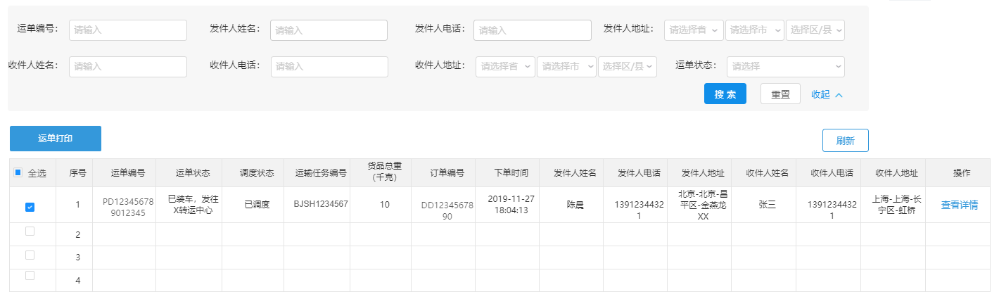
运单对应的数据模型为：pd_work数据库中的pd_transport_order表，表结构如下：
xxxxxxxxxxpackage com.itheima.pinda.entity;import com.baomidou.mybatisplus.annotation.IdType;import com.baomidou.mybatisplus.annotation.TableId;import com.baomidou.mybatisplus.annotation.TableName;import java.io.Serializable;import java.time.LocalDateTime;import lombok.Data;import lombok.EqualsAndHashCode;import lombok.experimental.Accessors;/** * 运单 */(callSuper = false)(chain = true)("pd_transport_order")public class TransportOrder implements Serializable { private static final long serialVersionUID = 1L; /** * id */ (value = "id", type = IdType.INPUT) private String id; /** * 订单ID */ private String orderId; /** * 运单状态(1.新建 2.已装车，发往x转运中心 3.到达 4.到达终端网点) */ private Integer status; /** * 调度状态调度状态(1.待调度2.未匹配线路3.已调度) */ private Integer schedulingStatus; /** * 创建时间 */ private LocalDateTime createTime;}第一步：创建TransportOrderController并提供save方法
xxxxxxxxxxpackage com.itheima.pinda.controller;import com.baomidou.mybatisplus.core.conditions.query.LambdaQueryWrapper;import com.baomidou.mybatisplus.core.metadata.IPage;import com.itheima.pinda.DTO.TransportOrderDTO;import com.itheima.pinda.DTO.TransportOrderSearchDTO;import com.itheima.pinda.common.utils.PageResponse;import com.itheima.pinda.entity.TransportOrder;import com.itheima.pinda.service.ITransportOrderService;import lombok.extern.slf4j.Slf4j;import org.springframework.beans.BeanUtils;import org.springframework.beans.factory.annotation.Autowired;import org.springframework.util.CollectionUtils;import org.springframework.web.bind.annotation.*;import java.util.ArrayList;import java.util.List;import java.util.stream.Collectors;/** * 运单管理 */("transport-order")public class TransportOrderController { private ITransportOrderService transportOrderService; /** * 新增运单 * * @param dto 运单信息 * @return 运单信息 */ ("") public TransportOrderDTO save( TransportOrderDTO dto) { TransportOrder transportOrder = new TransportOrder(); BeanUtils.copyProperties(dto, transportOrder); transportOrderService.saveTransportOrder(transportOrder); TransportOrderDTO result = new TransportOrderDTO(); BeanUtils.copyProperties(transportOrder, result); return result; }}第二步：创建ITransportOrderService接口
xxxxxxxxxxpackage com.itheima.pinda.service;import com.baomidou.mybatisplus.extension.service.IService;import com.itheima.pinda.entity.TransportOrder;import java.util.List;/** * 运单服务接口 */public interface ITransportOrderService extends IService<TransportOrder> { /** * 新增运单 * * @param transportOrder 运单信息 * @return 运单信息 */ TransportOrder saveTransportOrder(TransportOrder transportOrder);}第三步：创建TransportOrderServiceImpl实现类
xxxxxxxxxxpackage com.itheima.pinda.service.impl;import com.baomidou.mybatisplus.core.conditions.query.LambdaQueryWrapper;import com.baomidou.mybatisplus.core.metadata.IPage;import com.baomidou.mybatisplus.extension.plugins.pagination.Page;import com.baomidou.mybatisplus.extension.service.impl.ServiceImpl;import com.itheima.pinda.common.CustomIdGenerator;import com.itheima.pinda.entity.TransportOrder;import com.itheima.pinda.enums.transportorder.TransportOrderSchedulingStatus;import com.itheima.pinda.enums.transportorder.TransportOrderStatus;import com.itheima.pinda.mapper.TransportOrderMapper;import com.itheima.pinda.service.ITransportOrderService;import org.apache.commons.lang.StringUtils;import org.springframework.beans.factory.annotation.Autowired;import org.springframework.stereotype.Service;import java.time.LocalDateTime;import java.util.List;/** * 运单服务实现类 */public class TransportOrderServiceImpl extends ServiceImpl<TransportOrderMapper, TransportOrder> implements ITransportOrderService { private CustomIdGenerator idGenerator; public TransportOrder saveTransportOrder(TransportOrder transportOrder) { transportOrder.setCreateTime(LocalDateTime.now()); transportOrder.setId(idGenerator.nextId(transportOrder) + ""); transportOrder.setStatus(TransportOrderStatus.CREATED.getCode()); transportOrder.setSchedulingStatus(TransportOrderSchedulingStatus.TO_BE_SCHEDULED.getCode()); save(transportOrder); return transportOrder; } }第四步：创建TransportOrderMapper接口
xxxxxxxxxxpackage com.itheima.pinda.mapper;import com.baomidou.mybatisplus.core.mapper.BaseMapper;import com.itheima.pinda.entity.TransportOrder;import org.apache.ibatis.annotations.Mapper;/** * 运单Mapper接口 */public interface TransportOrderMapper extends BaseMapper<TransportOrder> {}第五步：创建上面Mapper接口对应的xml映射文件
文件位置：/resources/mapper/TransportOrderMapper.xml
xxxxxxxxxx <mapper namespace="com.itheima.pinda.mapper.TransportOrderMapper"></mapper>在TransportOrderController中创建updateById方法：
xxxxxxxxxx/*** 修改运单信息** @param id 运单id* @param dto 运单信息* @return 运单信息*/("/{id}")public TransportOrderDTO updateById((name = "id") String id, TransportOrderDTO dto) { dto.setId(id); TransportOrder transportOrder = new TransportOrder(); BeanUtils.copyProperties(dto, transportOrder); transportOrderService.updateById(transportOrder); return dto;}第一步：在TransportOrderController中创建findByPage方法
xxxxxxxxxx/*** 获取运单分页数据** @param page 页码* @param pageSize 页尺寸* @param orderId 订单ID* @param status 运单状态(1.新建 2.已装车，发往x转运中心 3.到达 4.到达终端网点)* @param schedulingStatus 调度状态调度状态(1.待调度2.未匹配线路3.已调度)* @return 运单分页数据*/("/page")public PageResponse<TransportOrderDTO> findByPage((name = "page") Integer page, (name = "pageSize") Integer pageSize, (name = "orderId", required = false) String orderId, (name = "status", required = false) Integer status, (name = "schedulingStatus", required = false) Integer schedulingStatus) { IPage<TransportOrder> orderIPage = transportOrderService.findByPage(page, pageSize, orderId, status, schedulingStatus); List<TransportOrderDTO> dtoList = new ArrayList<>(); orderIPage.getRecords().forEach(order -> { TransportOrderDTO resultDto = new TransportOrderDTO(); BeanUtils.copyProperties(order, resultDto); dtoList.add(resultDto); }); return PageResponse.<TransportOrderDTO>builder().items(dtoList).pagesize(pageSize).page(page).counts(orderIPage.getTotal()) .pages(orderIPage.getPages()).build();}第二步：在ITransportOrderService接口中扩展findByPage方法
xxxxxxxxxx/*** 获取运单分页数据** @param page 页码* @param pageSize 页尺寸* @param orderId 订单Id* @param status 运单状态* @param schedulingStatus 运单调度状态* @return 运单分页数据*/IPage<TransportOrder> findByPage(Integer page, Integer pageSize, String orderId, Integer status, Integer schedulingStatus);第三步：在TransportOrderServiceImpl实现类中实现findByPage方法
xxxxxxxxxxpublic IPage<TransportOrder> findByPage(Integer page, Integer pageSize, String orderId, Integer status, Integer schedulingStatus) { Page<TransportOrder> iPage = new Page(page, pageSize); LambdaQueryWrapper<TransportOrder> lambdaQueryWrapper = new LambdaQueryWrapper<>(); if (StringUtils.isNotEmpty(orderId)) { lambdaQueryWrapper.like(TransportOrder::getOrderId, orderId); } if (status != null) { lambdaQueryWrapper.eq(TransportOrder::getStatus, status); } if (schedulingStatus != null) { lambdaQueryWrapper.eq(TransportOrder::getSchedulingStatus, schedulingStatus); } return page(iPage, lambdaQueryWrapper);}在TransportOrderController中创建findById方法：
xxxxxxxxxx/*** 根据id获取运单信息** @param id 运单id* @return 运单信息*/("/{id}")public TransportOrderDTO findById((name = "id") String id) { TransportOrderDTO dto = new TransportOrderDTO(); TransportOrder transportOrder = transportOrderService.getById(id); if (transportOrder != null) { BeanUtils.copyProperties(transportOrder, dto); } else { dto = null; } return dto;}第一步：在TransportOrderController中创建findByOrderId方法
xxxxxxxxxx/*** 根据订单id获取运单信息** @param orderId 订单id* @return 运单信息*/("/orderId/{orderId}")public TransportOrderDTO findByOrderId((name = "orderId") String orderId) { TransportOrderDTO dto = new TransportOrderDTO(); TransportOrder transportOrder = transportOrderService.findByOrderId(orderId); if (transportOrder != null) { BeanUtils.copyProperties(transportOrder, dto); } else { dto = null; } return dto;}第二步：在ITransportOrderService接口中扩展findByOrderId方法
xxxxxxxxxx/*** 通过订单id获取运单信息** @param orderId 订单id* @return 运单信息*/TransportOrder findByOrderId(String orderId);第三步：在TransportOrderServiceImpl实现类中实现findByOrderId方法
xxxxxxxxxxpublic TransportOrder findByOrderId(String orderId) { return getOne(new LambdaQueryWrapper<TransportOrder>().eq(TransportOrder::getOrderId, orderId));}在TransportOrderController中创建findByOrderIds方法
xxxxxxxxxx/*** 根据多个订单id查询运单信息** @param ids* @return*/("orderIds")public List<TransportOrderDTO> findByOrderIds((name = "ids") List<String> ids) { LambdaQueryWrapper<TransportOrder> wrapper = new LambdaQueryWrapper(); wrapper.in(TransportOrder::getOrderId, ids); List<TransportOrder> transportOrders = transportOrderService.list(wrapper); return transportOrders.stream().map(item -> { TransportOrderDTO dto = new TransportOrderDTO(); BeanUtils.copyProperties(item, dto); return dto; }).collect(Collectors.toList());}在TransportOrderController中创建list方法
xxxxxxxxxx/*** 根据多个参数获取运单信息** @param transportOrderSearchDTO* @return*/("list")public List<TransportOrderDTO> list( TransportOrderSearchDTO transportOrderSearchDTO) { LambdaQueryWrapper<TransportOrder> wrapper = new LambdaQueryWrapper(); wrapper.eq(transportOrderSearchDTO.getStatus() != null, TransportOrder::getStatus, transportOrderSearchDTO.getStatus()); wrapper.eq(transportOrderSearchDTO.getSchedulingStatus() != null, TransportOrder::getSchedulingStatus, transportOrderSearchDTO.getSchedulingStatus()); wrapper.in(!CollectionUtils.isEmpty(transportOrderSearchDTO.getOrderIds()), TransportOrder::getOrderId, transportOrderSearchDTO.getOrderIds()); List<TransportOrder> transportOrders = transportOrderService.list(wrapper); return transportOrders.stream().map(item -> { TransportOrderDTO dto = new TransportOrderDTO(); BeanUtils.copyProperties(item, dto); return dto; }).collect(Collectors.toList());}根据订单和运单计算，产生运输任务(pd_task_transport)。一个运单可能关联多个运输任务。
任务状态：1为待执行（对应 未发车）、2为进行中（对应在途）、3为待确认（保留状态）、4为已完成（对应 已交付）、5为已取消。
任务分配状态：1未分配、2已分配、3待人工分配。
产品原型如下：
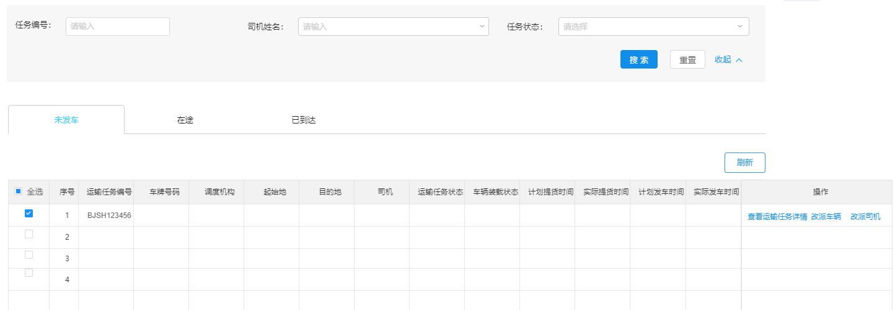
运输任务对应的数据模型为：pd_work数据库中的pd_task_transport表，表结构如下：
xxxxxxxxxxpackage com.itheima.pinda.entity;import com.baomidou.mybatisplus.annotation.IdType;import com.baomidou.mybatisplus.annotation.TableId;import com.baomidou.mybatisplus.annotation.TableName;import lombok.Data;import lombok.EqualsAndHashCode;import lombok.experimental.Accessors;import java.io.Serializable;import java.time.LocalDateTime;/** * 运输任务 */(callSuper = false)(chain = true)("pd_task_transport")public class TaskTransport implements Serializable { private static final long serialVersionUID = 1L; /** * id */ (value = "id", type = IdType.INPUT) private String id; /** * 车次id */ private String transportTripsId; /** * 起始机构id */ private String startAgencyId; /** * 目的机构id */ private String endAgencyId; /** * 任务状态，1为待执行（对应 待提货）、2为进行中（对应在途）、3为待确认（保留状态）、4为已完成（对应 已交付）、5为已取消 */ private Integer status; /** * 任务分配状态(1未分配2已分配3待人工分配) */ private Integer assignedStatus; /** * 满载状态(1.半载2.满载3.空载) */ private Integer loadingStatus; /** * 车辆id */ private String truckId; /** * 提货凭证 */ private String cargoPickUpPicture; /** * 货物照片 */ private String cargoPicture; /** * 运回单凭证 */ private String transportCertificate; /** * 计划发车时间 */ private LocalDateTime planDepartureTime; /** * 实际发车时间 */ private LocalDateTime actualDepartureTime; /** * 计划到达时间 */ private LocalDateTime planArrivalTime; /** * 实际到达时间 */ private LocalDateTime actualArrivalTime; /** * 计划提货时间 */ private LocalDateTime planPickUpGoodsTime; /** * 实际提货时间 */ private LocalDateTime actualPickUpGoodsTime; /** * 计划交付时间 */ private LocalDateTime planDeliveryTime; /** * 实际交付时间 */ private LocalDateTime actualDeliveryTime; /** * 交付货物照片 */ private String deliverPicture; /** * 提货纬度 */ private String deliveryLatitude; /** * 提货经度 */ private String deliveryLongitude; /** * 交付纬度 */ private String deliverLatitude; /** * 交付经度 */ private String deliverLongitude; /** * 任务创建时间 */ private LocalDateTime createTime;}xxxxxxxxxxpackage com.itheima.pinda.entity;import com.baomidou.mybatisplus.annotation.IdType;import com.baomidou.mybatisplus.annotation.TableId;import com.baomidou.mybatisplus.annotation.TableName;import lombok.Data;import lombok.EqualsAndHashCode;import lombok.experimental.Accessors;import java.io.Serializable;import java.time.LocalDateTime;/** * <p> * 运单与运输任务关联表 * </p> */(callSuper = false)(chain = true)("pd_transport_order_task")public class TransportOrderTask implements Serializable { private static final long serialVersionUID = 1L; /** * id */ (value = "id", type = IdType.INPUT) private String id; /** * 运单Id */ private String transportOrderId; /** * 运输任务Id */ private String transportTaskId;}第一步：创建TransportTaskController并提供save方法
xxxxxxxxxxpackage com.itheima.pinda.controller;import com.baomidou.mybatisplus.core.metadata.IPage;import com.itheima.pinda.DTO.TaskTransportDTO;import com.itheima.pinda.common.utils.PageResponse;import com.itheima.pinda.entity.TaskTransport;import com.itheima.pinda.entity.TransportOrderTask;import com.itheima.pinda.service.ITaskTransportService;import com.itheima.pinda.service.ITransportOrderTaskService;import lombok.extern.slf4j.Slf4j;import org.springframework.beans.BeanUtils;import org.springframework.beans.factory.annotation.Autowired;import org.springframework.web.bind.annotation.*;import java.util.ArrayList;import java.util.List;import java.util.stream.Collectors;/** * 运输任务管理 */("transport-task")public class TransportTaskController { private ITaskTransportService taskTransportService; private ITransportOrderTaskService transportOrderTaskService; /** * 新增运输任务 * * @param dto 运输任务信息 * @return 运输任务信息 */ ("") public TaskTransportDTO save( TaskTransportDTO dto) { TaskTransport transportOrder = new TaskTransport(); BeanUtils.copyProperties(dto, transportOrder); taskTransportService.saveTaskTransport(transportOrder); //保存与运单的关联关系 if (dto.getTransportOrderIds() != null && dto.getTransportOrderIds().size() > 0) { List<TransportOrderTask> transportOrderTaskList = dto.getTransportOrderIds().stream().map(transportOrderId -> { TransportOrderTask transportOrderTask = new TransportOrderTask(); transportOrderTask.setTransportOrderId(transportOrderId); transportOrderTask.setTransportTaskId(transportOrder.getId()); return transportOrderTask; }).collect(Collectors.toList()); transportOrderTaskService.batchSaveTransportOrder(transportOrderTaskList); } TaskTransportDTO result = new TaskTransportDTO(); BeanUtils.copyProperties(transportOrder, result); result.setTransportOrderIds(dto.getTransportOrderIds()); return result; }}第二步：创建ITaskTransportService和ITransportOrderTaskService接口
xxxxxxxxxxpackage com.itheima.pinda.service;import com.baomidou.mybatisplus.core.metadata.IPage;import com.baomidou.mybatisplus.extension.service.IService;import com.itheima.pinda.DTO.TaskTransportDTO;import com.itheima.pinda.entity.TaskTransport;import java.util.List;/** * 运输任务服务接口 */public interface ITaskTransportService extends IService<TaskTransport> { /** * 新增运输任务 * * @param taskTransport 运输任务信息 * @return 运输任务信息 */ TaskTransport saveTaskTransport(TaskTransport taskTransport);}xxxxxxxxxxpackage com.itheima.pinda.service;import com.baomidou.mybatisplus.core.metadata.IPage;import com.baomidou.mybatisplus.extension.service.IService;import com.itheima.pinda.entity.TransportOrder;import com.itheima.pinda.entity.TransportOrderTask;import java.util.List;/** * 运单和运输任务关联表服务接口 */public interface ITransportOrderTaskService extends IService<TransportOrderTask> { /** * 批量添加运单与运输任务关联关系 * * @param transportOrderTaskList 关联关系列表 */ void batchSaveTransportOrder(List<TransportOrderTask> transportOrderTaskList);}第三步：创建TaskTransportServiceImpl服务实现类，实现ITaskTransportService接口
xxxxxxxxxxpackage com.itheima.pinda.service.impl;import com.baomidou.mybatisplus.core.conditions.query.LambdaQueryWrapper;import com.baomidou.mybatisplus.core.metadata.IPage;import com.baomidou.mybatisplus.extension.plugins.pagination.Page;import com.baomidou.mybatisplus.extension.service.impl.ServiceImpl;import com.itheima.pinda.DTO.TaskTransportDTO;import com.itheima.pinda.common.CustomIdGenerator;import com.itheima.pinda.entity.TaskTransport;import com.itheima.pinda.enums.transporttask.TransportTaskAssignedStatus;import com.itheima.pinda.enums.transporttask.TransportTaskLoadingStatus;import com.itheima.pinda.enums.transporttask.TransportTaskStatus;import com.itheima.pinda.mapper.TaskTransportMapper;import com.itheima.pinda.service.ITaskTransportService;import org.apache.commons.lang.StringUtils;import org.springframework.beans.factory.annotation.Autowired;import org.springframework.stereotype.Service;import java.time.LocalDateTime;import java.util.List;/** * 运输任务服务实现类 */public class TaskTransportServiceImpl extends ServiceImpl<TaskTransportMapper, TaskTransport>implements ITaskTransportService { private CustomIdGenerator idGenerator; public TaskTransport saveTaskTransport(TaskTransport taskTransport) { taskTransport.setId(idGenerator.nextId(taskTransport) + ""); taskTransport.setCreateTime(LocalDateTime.now()); taskTransport.setStatus(TransportTaskStatus.PENDING.getCode()); taskTransport.setAssignedStatus(TransportTaskAssignedStatus.TO_BE_DISTRIBUTED.getCode()); taskTransport.setLoadingStatus(TransportTaskLoadingStatus.EMPTY.getCode()); save(taskTransport); return taskTransport; }}第四步：创建TransportOrderTaskServiceImpl实现类，实现ITransportOrderTaskService接口
xxxxxxxxxxpackage com.itheima.pinda.service.impl;import com.baomidou.mybatisplus.core.conditions.query.LambdaQueryWrapper;import com.baomidou.mybatisplus.core.metadata.IPage;import com.baomidou.mybatisplus.extension.plugins.pagination.Page;import com.baomidou.mybatisplus.extension.service.impl.ServiceImpl;import com.itheima.pinda.common.CustomIdGenerator;import com.itheima.pinda.entity.TransportOrder;import com.itheima.pinda.entity.TransportOrderTask;import com.itheima.pinda.enums.transportorder.TransportOrderSchedulingStatus;import com.itheima.pinda.enums.transportorder.TransportOrderStatus;import com.itheima.pinda.mapper.TransportOrderTaskMapper;import com.itheima.pinda.service.ITransportOrderTaskService;import org.apache.commons.lang.StringUtils;import org.springframework.beans.factory.annotation.Autowired;import org.springframework.stereotype.Service;import java.time.LocalDateTime;import java.util.List;/** * 运单和运输任务关联表服务实现类 */public class TransportOrderTaskServiceImpl extends ServiceImpl<TransportOrderTaskMapper, TransportOrderTask> implements ITransportOrderTaskService { private CustomIdGenerator idGenerator; public void batchSaveTransportOrder(List<TransportOrderTask> transportOrderTaskList) { transportOrderTaskList.forEach(transportOrderTask -> transportOrderTask.setId(idGenerator.nextId(transportOrderTask) + "")); saveBatch(transportOrderTaskList); }}第五步：创建TaskTransportMapper接口和TransportOrderTaskMapper接口
xxxxxxxxxxpackage com.itheima.pinda.mapper;import com.baomidou.mybatisplus.core.mapper.BaseMapper;import com.baomidou.mybatisplus.core.metadata.IPage;import com.itheima.pinda.entity.TaskTransport;import org.apache.ibatis.annotations.Mapper;import org.apache.ibatis.annotations.Param;import java.util.Map;/** * 运输任务Mapper接口 */public interface TaskTransportMapper extends BaseMapper<TaskTransport> {}xxxxxxxxxxpackage com.itheima.pinda.mapper;import com.baomidou.mybatisplus.core.mapper.BaseMapper;import com.itheima.pinda.entity.TransportOrder;import com.itheima.pinda.entity.TransportOrderTask;import org.apache.ibatis.annotations.Mapper;/** * 运单与运输任务关联表Mapper接口 */public interface TransportOrderTaskMapper extends BaseMapper<TransportOrderTask> {}第六步：创建上面Mapper接口对应的xml映射文件
文件位置：/resources/mapper/TaskTransportMapper.xml
/resources/mapper/TransportOrderTaskMapper.xml
xxxxxxxxxx <mapper namespace="com.itheima.pinda.mapper.TaskTransportMapper"></mapper>xxxxxxxxxx <mapper namespace="com.itheima.pinda.mapper.TransportOrderTaskMapper"></mapper>第一步：在TransportTaskController中创建updateById方法
xxxxxxxxxx/*** 修改运输任务信息** @param id 运输任务id* @param dto 运输任务信息* @return 运输任务信息*/("/{id}")public TaskTransportDTO updateById((name = "id") String id, TaskTransportDTO dto) { dto.setId(id); TaskTransport taskTransport = new TaskTransport(); BeanUtils.copyProperties(dto, taskTransport); taskTransportService.updateById(taskTransport); transportOrderTaskService.del(null, id); //保存与运单的关联关系 if (dto.getTransportOrderIds() != null && dto.getTransportOrderIds().size() > 0) { List<TransportOrderTask> transportOrderTaskList = dto.getTransportOrderIds().stream().map(transportOrderId -> { TransportOrderTask transportOrderTask = new TransportOrderTask(); transportOrderTask.setTransportOrderId(transportOrderId); transportOrderTask.setTransportTaskId(id); return transportOrderTask; }).collect(Collectors.toList()); transportOrderTaskService.batchSaveTransportOrder(transportOrderTaskList); } return dto;}第二步：在ITransportOrderTaskService接口中扩展del方法
xxxxxxxxxx/*** 根据条件删除关联关系** @param transportOrderId 运单id* @param transportTaskId 运输任务id*/void del(String transportOrderId, String transportTaskId);第三步：在TransportOrderTaskServiceImpl实现类中实现del方法
xxxxxxxxxxpublic void del(String transportOrderId, String transportTaskId) { boolean isDel = false; LambdaQueryWrapper<TransportOrderTask> lambdaQueryWrapper = new LambdaQueryWrapper<>(); if (StringUtils.isNotEmpty(transportOrderId)) { lambdaQueryWrapper.eq(TransportOrderTask::getTransportOrderId, transportOrderId); isDel = true; } if (StringUtils.isNotEmpty(transportTaskId)) { lambdaQueryWrapper.eq(TransportOrderTask::getTransportTaskId, transportTaskId); isDel = true; } if (isDel) { remove(lambdaQueryWrapper); }}第一步：在TransportTaskController中创建findByPage方法
xxxxxxxxxx/*** 获取运输任务分页数据** @param dto 查询参数* @return 运输任务分页数据*/("/page")public PageResponse<TaskTransportDTO> findByPage( TaskTransportDTO dto) { Integer page = 1; Integer pageSize = 10; List<TaskTransportDTO> dtoList = new ArrayList<>(); Long total = 0L; Long pages = 0L; if (dto != null) { if (dto.getPage() != null) { page = dto.getPage(); } if (dto.getPageSize() != null) { pageSize = dto.getPageSize(); } IPage<TaskTransport> taskTransportIPage = taskTransportService.findByPage(page, pageSize, dto.getId(), dto.getStatus()); taskTransportIPage.getRecords().forEach(taskTransport -> { TaskTransportDTO resultDto = new TaskTransportDTO(); BeanUtils.copyProperties(taskTransport, resultDto); List<String> transportOrderIds = new ArrayList<>(); //查询运输任务与运单关系 List<TransportOrderTask> transportOrderTaskList = transportOrderTaskService.findAll(null, taskTransport.getId()); transportOrderIds.addAll(transportOrderTaskList.stream().map(transportOrderTask -> transportOrderTask.getTransportOrderId()).collect(Collectors.toList())); resultDto.setTransportOrderIds(transportOrderIds); resultDto.setTransportOrderCount(resultDto.getTransportOrderIds().size()); dtoList.add(resultDto); }); total = taskTransportIPage.getTotal(); pages = taskTransportIPage.getPages(); } return PageResponse.<TaskTransportDTO>builder().items(dtoList).pagesize(pageSize).page(page).counts(total) .pages(pages).build();}第二步：在ITaskTransportService接口中扩展findByPage方法
xxxxxxxxxx/*** 获取运输任务分页数据** @param page 页码* @param pageSize 页尺寸* @param id 任务id* @param status 运输任务状态* @return 运输任务分页数据*/IPage<TaskTransport> findByPage(Integer page, Integer pageSize, String id, Integer status);第三步：在ITransportOrderTaskService接口中扩展findAll方法
xxxxxxxxxx/*** 获取运单与运输任务关联关系列表** @param transportOrderId 运单id* @param transportTaskId 订单id* @return 运单与运输任务关联关系列表*/List<TransportOrderTask> findAll(String transportOrderId, String transportTaskId);第四步：在TaskTransportServiceImpl实现类中实现findByPage方法
xxxxxxxxxxpublic IPage<TaskTransport> findByPage(Integer page, Integer pageSize, String id, Integer status) { Page<TaskTransport> iPage = new Page(page, pageSize); LambdaQueryWrapper<TaskTransport> lambdaQueryWrapper = new LambdaQueryWrapper<>(); if (StringUtils.isNotEmpty(id)) { lambdaQueryWrapper.like(TaskTransport::getId, id); } if (status != null) { lambdaQueryWrapper.eq(TaskTransport::getStatus, status); } return page(iPage, lambdaQueryWrapper);}第五步：在TransportOrderTaskServiceImpl实现类中实现findAll方法
xxxxxxxxxxpublic List<TransportOrderTask> findAll(String transportOrderId, String transportTaskId) { LambdaQueryWrapper<TransportOrderTask> lambdaQueryWrapper = new LambdaQueryWrapper<>(); if (StringUtils.isNotEmpty(transportOrderId)) { lambdaQueryWrapper.like(TransportOrderTask::getTransportOrderId, transportOrderId); } if (StringUtils.isNotEmpty(transportTaskId)) { lambdaQueryWrapper.like(TransportOrderTask::getTransportTaskId, transportTaskId); } lambdaQueryWrapper.orderBy(true, true, TransportOrderTask::getId); return list(lambdaQueryWrapper);}第一步：在TransportTaskController中创建findAll方法
xxxxxxxxxx/*** 获取运单列表** @param dto 查询条件* @return 运单列表*/("/list")public List<TaskTransportDTO> findAll( TaskTransportDTO dto) { return taskTransportService.findAll(dto.getIds(), dto.getId(), dto.getStatus(),dto).stream().map(taskTransport -> { TaskTransportDTO resultDto = new TaskTransportDTO(); BeanUtils.copyProperties(taskTransport, resultDto); return resultDto; }).collect(Collectors.toList());}第二步：在ITaskTransportService接口中扩展findAll方法
xxxxxxxxxx/*** 获取运输任务列表** @param ids 运输任务id列表* @param id 运输任务Id* @param status 运单状态* @param dto* @return 运输任务列表*/List<TaskTransport> findAll(List<String> ids, String id, Integer status, TaskTransportDTO dto);第三步：在TaskTransportServiceImpl实现类中实现findAll方法
xxxxxxxxxxpublic List<TaskTransport> findAll(List<String> ids, String id, Integer status, TaskTransportDTO dto) { LambdaQueryWrapper<TaskTransport> lambdaQueryWrapper = new LambdaQueryWrapper<>(); if (ids != null && ids.size() > 0) { lambdaQueryWrapper.in(TaskTransport::getId, ids); } if (StringUtils.isNotEmpty(id)) { lambdaQueryWrapper.like(TaskTransport::getId, id); } if (status != null) { lambdaQueryWrapper.eq(TaskTransport::getStatus, status); } if (dto != null) { lambdaQueryWrapper.eq(StringUtils.isNotBlank(dto.getTruckId()), TaskTransport::getTruckId, dto.getTruckId()); } return list(lambdaQueryWrapper);}在TransportTaskController中创建findAllByOrderIdOrTaskId方法
xxxxxxxxxx/*** 根据运单id或运输任务id获取运输任务列表** @return 运输任务列表*/("/listByOrderIdOrTaskId")public List<TaskTransportDTO> findAllByOrderIdOrTaskId((name = "transportOrderId", required = false) String transportOrderId, (name = "taskTransportId", required = false) String taskTransportId) { List<TransportOrderTask> transportOrderTaskList = transportOrderTaskService.findAll(transportOrderId, taskTransportId); List<String> transportTaskIds = transportOrderTaskList.stream().map(transportOrderTask -> transportOrderTask.getTransportTaskId()).collect(Collectors.toList()); List<TaskTransportDTO> dtoList = new ArrayList<>(); if (transportTaskIds != null && transportTaskIds.size() > 0) { dtoList.addAll(taskTransportService.findAll(transportTaskIds, null, null, null).stream().map(taskTransport -> { TaskTransportDTO resultDto = new TaskTransportDTO(); BeanUtils.copyProperties(taskTransport, resultDto); return resultDto; }).collect(Collectors.toList())); } return dtoList;}在TransportTaskController中创建findById方法
xxxxxxxxxx/*** 根据id获取运输任务信息** @param id 运输任务id* @return 运输任务信息*/("/{id}")public TaskTransportDTO findById((name = "id") String id) { TaskTransportDTO dto = new TaskTransportDTO(); TaskTransport taskTransport = taskTransportService.getById(id); if (taskTransport != null) { BeanUtils.copyProperties(taskTransport, dto); List<String> transportOrderIds = new ArrayList<>(); List<TransportOrderTask> transportOrderTaskList = transportOrderTaskService.findAll(null, taskTransport.getId()); transportOrderIds.addAll(transportOrderTaskList.stream().map(transportOrderTask -> transportOrderTask.getTransportOrderId()).collect(Collectors.toList())); dto.setTransportOrderIds(transportOrderIds); dto.setTransportOrderCount(dto.getTransportOrderIds().size()); } else { dto = null; } return dto;}调度过程中会根据运输任务计算产生司机作业单，司机根据作业单进行运输作业。
作业状态：1为待执行（对应 待提货）、2为进行中（对应在途）、3为改派（对应 已交付）、4为已完成（对应 已交付）、5为已作废。
产品原型如下：
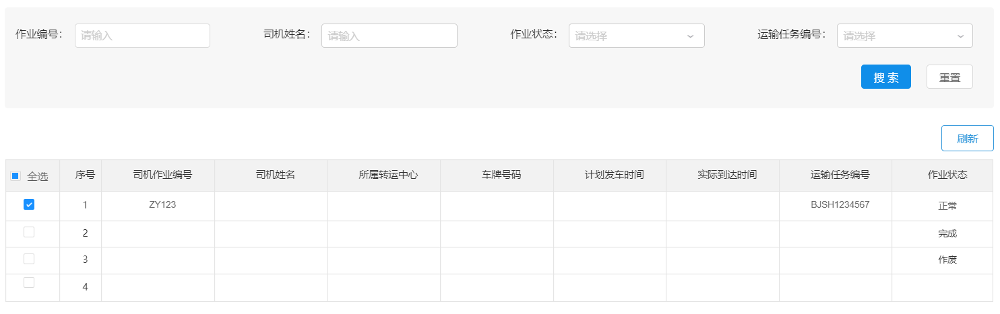
司机作业单对应的数据模型为：pd_work数据库中的pd_driver_job表，表结构如下：
xxxxxxxxxxpackage com.itheima.pinda.entity;import com.baomidou.mybatisplus.annotation.IdType;import com.baomidou.mybatisplus.annotation.TableId;import com.baomidou.mybatisplus.annotation.TableName;import lombok.Data;import lombok.EqualsAndHashCode;import lombok.experimental.Accessors;import java.io.Serializable;import java.time.LocalDateTime;/** * 司机作业单 */(callSuper = false)(chain = true)("pd_driver_job")public class DriverJob implements Serializable { private static final long serialVersionUID = 1L; /** * id */ (value = "id", type = IdType.INPUT) private String id; /** * 起始机构id */ private String startAgencyId; /** * 目的机构id */ private String endAgencyId; /** * 作业状态，1为待执行（对应 待提货）、2为进行中（对应在途）、3为改派（对应 已交付）、4为已完成（对应 已交付）、5为已作废 */ private Integer status; /** * 司机id */ private String driverId; /** * 运输任务id */ private String taskTransportId; /** * 提货对接人 */ private String startHandover; /** * 交付对接人 */ private String finishHandover; /** * 计划发车时间 */ private LocalDateTime planDepartureTime; /** * 实际发车时间 */ private LocalDateTime actualDepartureTime; /** * 计划到达时间 */ private LocalDateTime planArrivalTime; /** * 实际到达时间 */ private LocalDateTime actualArrivalTime; /** * 创建时间 */ private LocalDateTime createTime;}第一步：创建DriverJobController并提供save方法
xxxxxxxxxxpackage com.itheima.pinda.controller;import com.itheima.pinda.DTO.DriverJobDTO;import com.itheima.pinda.entity.DriverJob;import com.itheima.pinda.service.IDriverJobService;import lombok.extern.slf4j.Slf4j;import org.springframework.beans.BeanUtils;import org.springframework.beans.factory.annotation.Autowired;import org.springframework.web.bind.annotation.*;/** * 司机作业单管理 */("driver-job")public class DriverJobController { private IDriverJobService driverJobService; /** * 新增司机作业单 * * @param dto 司机作业单信息 * @return 司机作业单信息 */ ("") public DriverJobDTO save( DriverJobDTO dto) { DriverJob driverJob = new DriverJob(); BeanUtils.copyProperties(dto, driverJob); driverJobService.saveDriverJob(driverJob); DriverJobDTO result = new DriverJobDTO(); BeanUtils.copyProperties(driverJob, result); return result; }}第二步：创建IDriverJobService接口
xxxxxxxxxxpackage com.itheima.pinda.service;import com.baomidou.mybatisplus.extension.service.IService;import com.itheima.pinda.entity.DriverJob;/** * 运输任务表服务接口 */public interface IDriverJobService extends IService<DriverJob> { /** * 新增司机作业单 * * @param driverJob 作业单信息 * @return 作业单信息 */ DriverJob saveDriverJob(DriverJob driverJob);}第三步：创建DriverJobServiceImpl服务实现类，实现IDriverJobService接口
xxxxxxxxxxpackage com.itheima.pinda.service.impl;import com.baomidou.mybatisplus.core.conditions.query.LambdaQueryWrapper;import com.baomidou.mybatisplus.core.metadata.IPage;import com.baomidou.mybatisplus.extension.plugins.pagination.Page;import com.baomidou.mybatisplus.extension.service.impl.ServiceImpl;import com.itheima.pinda.common.CustomIdGenerator;import com.itheima.pinda.entity.DriverJob;import com.itheima.pinda.enums.driverjob.DriverJobStatus;import com.itheima.pinda.mapper.DriverJobMapper;import com.itheima.pinda.service.IDriverJobService;import org.apache.commons.lang.StringUtils;import org.springframework.beans.factory.annotation.Autowired;import org.springframework.stereotype.Service;import java.time.LocalDateTime;import java.util.List;public class DriverJobServiceImpl extends ServiceImpl<DriverJobMapper, DriverJob> implements IDriverJobService { private CustomIdGenerator idGenerator; public DriverJob saveDriverJob(DriverJob driverJob) { driverJob.setId(idGenerator.nextId(driverJob) + ""); driverJob.setCreateTime(LocalDateTime.now()); driverJob.setStatus(DriverJobStatus.PENDING.getCode()); save(driverJob); return driverJob; }}第四步：创建DriverJobMapper接口
xxxxxxxxxxpackage com.itheima.pinda.mapper;import com.baomidou.mybatisplus.core.mapper.BaseMapper;import com.itheima.pinda.entity.DriverJob;import org.apache.ibatis.annotations.Mapper;/** * 司机作业单Mapper接口 */public interface DriverJobMapper extends BaseMapper<DriverJob> {}第五步：创建上面Mapper接口对应的xml映射文件
文件位置：/resources/mapper/DriverJobMapper.xml
xxxxxxxxxx <mapper namespace="com.itheima.pinda.mapper.DriverJobMapper"></mapper>在DriverJobController中创建updateById方法
xxxxxxxxxx/*** 修改司机作业单信息** @param id 司机作业单id* @param dto 司机作业单信息* @return 司机作业单信息*/("/{id}")public DriverJobDTO updateById((name = "id") String id, DriverJobDTO dto) { dto.setId(id); DriverJob driverJob = new DriverJob(); BeanUtils.copyProperties(dto, driverJob); driverJobService.updateById(driverJob); return dto;}第一步：在DriverJobController中创建findByPage方法
xxxxxxxxxx/*** 获取司机作业单分页数据** @param dto 查询参数* @return 司机作业单分页数据*/("/page")public PageResponse<DriverJobDTO> findByPage( DriverJobDTO dto) { Integer page = 1; Integer pageSize = 10; List<DriverJobDTO> dtoList = new ArrayList<>(); Long total = 0L; Long pages = 0L; if (dto != null) { if (dto.getPage() != null) { page = dto.getPage(); } if (dto.getPageSize() != null) { pageSize = dto.getPageSize(); } IPage<DriverJob> driverJobIPage = driverJobService.findByPage(page, pageSize, dto.getId(), dto.getDriverId(), dto.getStatus(), dto.getTaskTransportId()); driverJobIPage.getRecords().forEach(driverJob -> { DriverJobDTO resultDto = new DriverJobDTO(); BeanUtils.copyProperties(driverJob, resultDto); dtoList.add(resultDto); }); total = driverJobIPage.getTotal(); pages = driverJobIPage.getPages(); } return PageResponse.<DriverJobDTO>builder().items(dtoList).pagesize(pageSize).page(page).counts(total) .pages(pages).build();}第二步：在IDriverJobService接口中扩展findByPage方法
xxxxxxxxxx/*** 获取司机作业单分页数据** @param page 页码* @param pageSize 页尺寸* @param id 作业Id* @param driverId 司机id* @param status 作业状态* @param taskTransportId 运输任务id* @return 司机作业单分页数据*/IPage<DriverJob> findByPage(Integer page, Integer pageSize,String id,String driverId,Integer status,String taskTransportId);第三步：在DriverJobServiceImpl实现类中实现findByPage方法
xxxxxxxxxxpublic IPage<DriverJob> findByPage(Integer page, Integer pageSize, String id, String driverId, Integer status, String taskTransportId) { Page<DriverJob> iPage = new Page(page, pageSize); LambdaQueryWrapper<DriverJob> lambdaQueryWrapper = new LambdaQueryWrapper<>(); if (StringUtils.isNotEmpty(id)) { lambdaQueryWrapper.like(DriverJob::getId, id); } if (StringUtils.isNotEmpty(driverId)) { lambdaQueryWrapper.eq(DriverJob::getDriverId, driverId); } if (status != null) { lambdaQueryWrapper.eq(DriverJob::getStatus, status); } if (StringUtils.isNotEmpty(taskTransportId)) { lambdaQueryWrapper.like(DriverJob::getTaskTransportId, taskTransportId); } lambdaQueryWrapper.orderByAsc(DriverJob::getCreateTime); return page(iPage, lambdaQueryWrapper);}在DriverJobController中创建findById方法
xxxxxxxxxx/*** 根据id获取司机作业单信息** @param id 司机作业单id* @return 司机作业单信息*/("/{id}")public DriverJobDTO findById((name = "id") String id) { DriverJobDTO dto = new DriverJobDTO(); DriverJob driverJob = driverJobService.getById(id); if (driverJob != null) { BeanUtils.copyProperties(driverJob, dto); } else { dto = null; } return dto;}第一步：在DriverJobController中创建findAll方法
xxxxxxxxxx/*** 多条件查询司机作业单** @param dto* @return*/("/findAll")public List<DriverJobDTO> findAll( DriverJobDTO dto) { List<DriverJobDTO> dtos = new ArrayList<>(); List<DriverJob> driverJobs = driverJobService.findAll(null, dto.getId(), dto.getDriverId(), dto.getStatus(), dto.getTaskTransportId()); if (driverJobs != null) { for (DriverJob driverJob : driverJobs) { dto = new DriverJobDTO(); BeanUtils.copyProperties(driverJob, dto); dtos.add(dto); } } return dtos;}第二步：在IDriverJobService接口中扩展findAll方法
xxxxxxxxxx/*** 获取司机作业单列表** @param ids 司机作业单id列表* @param id 司机作业单Id* @param status 司机作业单状态* @return 司机作业单列表*/List<DriverJob> findAll(List<String> ids, String id, String driverId, Integer status, String taskTransportId);第三步：在DriverJobServiceImpl实现类中实现findAll方法
xxxxxxxxxxpublic List<DriverJob> findAll(List<String> ids, String id, String driverId, Integer status, String taskTransportId) { LambdaQueryWrapper<DriverJob> lambdaQueryWrapper = new LambdaQueryWrapper<>(); if (ids != null && ids.size() > 0) { lambdaQueryWrapper.in(DriverJob::getId, ids); } if (StringUtils.isNotEmpty(id)) { lambdaQueryWrapper.like(DriverJob::getId, id); } if (StringUtils.isNotEmpty(driverId)) { lambdaQueryWrapper.like(DriverJob::getDriverId, driverId); } if (status != null) { lambdaQueryWrapper.eq(DriverJob::getStatus, status); } if (StringUtils.isNotEmpty(taskTransportId)) { lambdaQueryWrapper.like(DriverJob::getTaskTransportId, taskTransportId); } lambdaQueryWrapper.orderByDesc(DriverJob::getCreateTime); return list(lambdaQueryWrapper);}